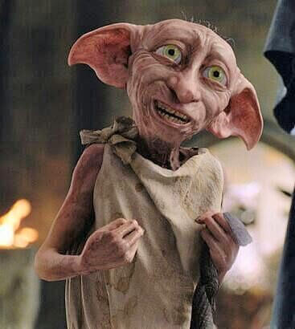
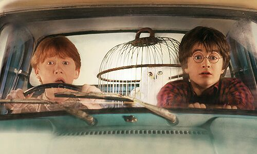
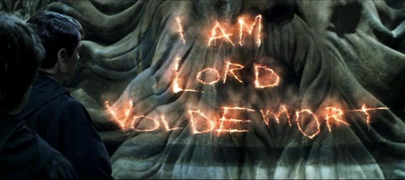

Harry Potter y la Cámara Secreta
Harry, tras derrotar una vez más a Lord Voldemort, su siniestro enemigo en Harry Potter y la piedra Filosofal, espera impaciente en casa de sus insoportables tíos el inicio del segundo curso del colegio Hogwarts, de Magía y Hechicería. Sin embargo, la espera dura poco, pues un elfo doméstico aparece en su habitación y le advierte que una amenaza mortal se cierne sobre la escuela.

Aún sabiendo eso, Harry no se lo piensa dos veces y, acompañado de Ron, su mejor amigo, se dirige a Hogwarts en un coche volador. Pero ¿puede un aprendiz de mago defender la escuela de los malvados que pretenden destruirla? Sin saber que alguien ha abierto la cámara de los secretos, dejando escapar una serie de mosntruos peligrosos.
Harry y sus amigos Ron y Hermione tendrán que enfrentarse con arañas gigantes, serpientes encantadas, fantasmas enfurecidos y, sobre todo, con la mismísima reencarnación de su más terrible adversario, Lord Voldemort
